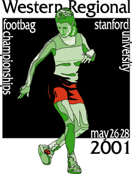

<< Mirror added link to registration summary: regsummary/979334083 >>
open: singles net, doubles net, mixed doubles net, singles freestyle, doubles freestyle, golf women's: singles net, doubles net, singles freestyle intermediate: singles net, doubles net, singles freestyle, golf novice: doubles net
|
The 16th annual Western Regional Footbag Championships went off
without a hitch last weekend, with perfect weather all three days. We
had approximately 90 competitors, with more open than intermediate
players, almost even between net players and freestylers. Players came
not only from the western states, but also from as far away as the DC
area and Montreal (Canada). And, as usual, the Montreal contingent (one
of whom now lives in the Bay Area) swept the net events. :-)
Despite a slightly smaller field of net players than in previous years, there was spectacular net competition all throughout the weekend. Upsets were had, and in a couple of cases, players from the losers' brackets (in the double-elim format) managed to fight their ways back to win the final match and the tie-breaker. There was definitely some incredibly exciting net play this weekend. |
Freestyle, as usual, was insane. New players showed up out of nowhere
already hitting 4-add tricks. Most of the best freestylers on the
west coast showed up, shredding hard the whole weekend. The
competition was phenomenal, garnering a pretty nice crowd for the
finals on Monday.
There's a lot more to report, but for the sake of brevity, I'll skip on to the results for the main events. Thanks to everyone who attended, whether you competed or not. Thanks go especially to the staff (listed below), as well as the booster club members who donated extra money in addition to their entry fee to help offset our costs this year. I sincerely appreciate everyone's help and understanding as we have had little funding over the last few years. |
-------
RESULTS: 16th Annual Western Regional Footbag Championships
Concluded - May 26-28, 2001
Stanford University - Wilbur Field
Palo Alto, California (USA)
Most valuable staff member: Julie Symons
Julie contributed not only tremendous amounts of time and energy to
making this year's Western Regionals possible, but she also
contributed cash to help with some of the expenses. This year, my job
situation was so crazy that I really had no time to even begin the
task of pulling everyone together to make the event happen. Julie
stepped up to the plate and took over for me to coordinate the
tournament this year. If it weren't for her, there simply would not
have been an event. Thanks, Julie. It was worth it -- the event went
very smoothly thanks to the help of all our great players and staff
members.
STAFF LIST (please e-mail me with any omissions):
Julie Symons - tournament coordinator, lunch czar, drinks, etc.
Steve Goldberg - tournament director, party (-ies) host, etc.
Brent Welch - registration director, equipment pick-up, pre-event, etc.
david Butcher - net director, T-shirts (art, coordination, payment)
Eric Wulff - freestyle director
Hugh Harrell - golf director
Lisa McDaniel - pre-event, staff food, pizza dinner, general staff, etc.
John Leys - pre-event coordination, general staff, etc.
Alexis Deschenes - pre-event coordination & pick-up, drinks, general
Jody Welch - water czar, pre-event coordination, general staff
Jimmy Caveney - net assistant director, pre-event and general staff
Hung Chang - pre-event helper, general staff, novice net director
Brian Pihl - general staff (booth and more), novice net co-director, etc.
Vince Bradley - general staff, results czar, novice net brackets, etc.
Tara Ohr - general staff (lots of booth help!), etc.
Lonya Julin - general staff (booth, etc.)
Brian Kimball - general staff (extra booth hours each day, lunch, etc.)
Iain McKechnie - general staff (booth and other)
Joe Shermetaro - Stanford club, power, pre-event, general staff
Ben Lynn - Stanford club, pre-event, financial manager, general staff
Kevin Fine - Stanford club, pre-event (field reservations, etc.)
Darlene House - general staff (booth, etc.)
Alex Zerbe - general staff (booth, etc.)
Avery McCombs - general staff (booth, etc.)
Darlene and Rene Sanche - plaques (including labor to cut, finish, etc.)
Thanks to everyone who helped out, even if you weren't listed above!
BOOSTER CLUB: (people who donated money to help offset our costs)
Jim Caveney
Julie Symons
Vince Bradley
Tina Lewis
Brent and Jody Welch
david Butcher
Daryl Genz
Mike Jauss
Jeff Goode
Nathan Martinez
COMPETITION RESULTS:
Open Singles Net
1. Alexis Deschenes
2. John Leys
3. Rob Adams
4. david Butcher
5. Jason Langis
6. Brent Stewart
7. Bob Lavigne
8. Jim Caveney
9. Tim Tucker
10. Iain McKechnie
11. Vince Bradley
12. Sage Woodmansee
13. Edwin Veltman
14. Roddy Esposito
15. Hugh Harrell
16. Curt Rund
17. A.J. Shultz
18. Jeff Goode
19. Steve Goldberg
20. Randy Pace
Open Singles Freestyle:
comp pres drops adds tricks ratio score
1. Ryan Mulroney 9.20 9.20 1 345 126 2.74 29.34
2. Lon Smith 9.10 9.57 4 256 98 2.61 27.84
3. Ahren Gehrman 7.90 7.97 5 213 83 2.57 24.31
4. Ken Somolinos 7.90 8.23 4 139 61 2.28 23.80
5. Sunil Jani 7.00 8.37 5 229 97 2.36 23.77
6. Daryl Genz 7.50 7.67 6 237 92 2.58 23.61
7. Toby Robinson 6.60 8.43 7 270 105 2.57 23.55
8. Tu Vu 6.30 7.90 5 158 72 2.19 21.72
9. Avery McCombs
9. Alex Zerbe Not played off; did not make cut to round 2.
11. Bryan Fournier / (Scores not comparable to finals pool above.)
11. Forest Schrodt /
Women's Singles Net:
1. Jody Welch
2. Lisa McDaniel
3. Julie Symons
4. Tina Lewis
5. Kelly Kelley
6. Teresa ("Tree") Rodgerson
7. Darlene House
Women's Singles Freestyle:
comp pres drops adds tricks ratio score
1. Carol Wedemeyer 6.90 8.53 5 153 74 2.07 22.78
2. Jane Jones 4.80 7.03 7 108 62 1.74 17.91
3. Tara Ohr 2.20 7.40 15 70 73 0.96 12.51
4. Sunny Freeman 2.30 4.33 19 121 87 1.39 9.48
5. Mel Schneider (scratched; 3rd in round 1; could only attend Sunday)
Open Doubles Net:
1. Bob Lavigne / Alexis Deschenes
2. david Butcher / Brent Welch
3. Jim Caveney / Pat Keehan
4. Iain McKechnie / Tim Tucker
5. Hung Chang / Rob Adams
6. Vince Bradley / Jason Langis
7. Jeff Goode / Beau Barnett
8. Julie Symons / Jody Welch
9. Edwin Veltman / Roddy Esposito
10. Lisa McDaniel / Amy Westberg
11. Randy Pace / Mike Scheele
12. Brent Stewart / John Leys (forfeit; did not play through due to injury)
13. Nick Jaros / Hugh Harrell
14. A.J. Shultz / Sage Woodmansee
15. Steve Goldberg / Mike Jauss
Open Mixed Doubles Net:
1. Lisa McDaniel / david Butcher
2. Brent Welch / Jody Welch
3. Amy Westberg / John Leys
4. Tina Lewis / Brent Stewart
5. Julie Symons / Alexis Deschenes
6. Kelly Kelley / Jim Caveney
7. Edwin Veltman / Darlene House
8. Sage Woodmansee / Teresa ("Tree") Rodgerson
Women's Doubles Net:
1. Lisa McDaniel / Amy Westberg
2. Jody Welch / Julie Symons
3. Tina Lewis / Kelly Kelley
4. Darlene House / Teresa ("Tree") Rodgerson
Open Golf:
1. Roddy Esposito
2. Hugh Harrell
3. Dave Wedertz
4. Sage Woodmansee
Intermediate Singles Net:
1. Mike Ingle
2. Ron Babot
3. Markus Willoughby
4. David Gilfillan
5. Roy Newman
6. Walter Sales
Intermediate Singles Freestyle:
comp pres drops adds tricks ratio score
1. Andrew Johnson 5.00 6.40 8 93 57 1.63 16.96
2. Peter Bevitori 4.00 6.47 7 119 74 1.61 16.52
3. Jeremy Mirken 2.90 5.67 7 92 54 1.70 14.44
4. Brian Pihl 3.30 5.53 11 92 62 1.48 13.49
5. Mark Husted 3.40 4.97 10 91 54 1.69 13.46
6. Mike Jauss
7. A.J. Shultz / only played in round 1; scores not comparable to above
Intermediate Doubles Net:
1. Curt Rund / Ron Babot
2. Markus Willoughby / David Gilfillan
3. Teresa ("Tree") Rodgerson / Darlene House
Open Freestyle Big Trick Contest:
Best 3 Tricks. Ahren Gehrman - tombstone/paradox-torque/blurry-blender
Best 2 Tricks. Ahren Gehrman - paradox-torque/blurry-blender
Best 1 Trick. Eric Wulff - leaning osis (aka "Macon Bacon")
Open Freestyle Shred Contest:
1. Ryan Mulroney - 211.41
2. Lon Smith - 180.97
3. Eric Wulff - 173.33
4. Brian McKenzie - 172.13
5. Daryl Genz - 155.17
6. Sunil Jani - 139.66
7. Forest Schrodt - 139.64
8. Ahren Gehrman - 134.71
9. Toby Robinson - 130.63
10. Avery McCombs - 101.68
11. Chad Devlahovich - 99.31
12. Richard Abshire - 97.92
13. Ken Somolinos - 94.34
14. Cameron Kennedy - 94.15
15. Melissa Schneider - 57.93
16. Mark Husted - 55.91
17. Mike Jauss - 46.25
18. Nathan Martinez - 38.16
|  | This is the largest tournament in the world besides the world
footbag championships.
Players from all over the west coast of the U.S. as well as visitors from far and wide
(Canada and the east coast) will be attending this year. This is a great chance to play
with (or just meet) most of the top freestylers and net players in the sport.
Don't waste your Memorial Day weekend by going camping! This is the place to be this year. Also available on-site: full-time DJ, footbag sales, four-square, and free water. Fun in the sun for the whole family. This annual event is one of the largest footbag tournaments in the world, situated on the beautiful campus of Stanford University in Palo Alto, California. It is a prize-money event with a full offering of net and freestyle competition for all levels of play, as well as free training and play for newcomers. A full-time DJ and other fun activities make this a great way to spend your weekend -- even if you're not planning to compete. There will be a non-stop freestyle jam on the volleyball court right next to the DJ area. Footbags (and other products) will be available for purchase at the various vendor booths on site. Prize money will be given for 1st place in open singles net, women's singles net, open doubles net, and open singles freestyle only. All other places in all other events will receive a hand-made plaque -- a great memento of the event that will last a lifetime. More information is below. |
The Western Regional Footbag Championships, is one of the largest footbag events in
the world, with close to 100 competitors attending from all across the United States and
Canada.
This year will mark the 16th consecutive year of this competition, which will take place
on the beautiful campus of Stanford University for the ninth year in a row.
This event is sanctioned by the World Footbag Association, under the authority of the
International Footbag Committee (IFC). As such, results from this competition are
eligible to be used for seeding at the World Footbag Championships this summer
(August 6-12, 2001 in Albany, Berkeley, and San Francisco, California). For more
information on IFC, see ifc.footbag.org, and for more
information on the Worlds,
see the worlds home page.
------------------------------------------------------------------------
EVENT OVERVIEW (see http://www.footbag.org/calendar/show/979334083)
Event: The 2001 Western Regional Footbag Championships and Festival
Dates: Saturday, May 26, 8am-7pm
Sunday, May 27, 10am-7:30pm
Monday, May 28, 9am-6pm (FINALS 2-6pm)
Site: Stanford University Campus in Palo Alto, California
Wilbur Field (on Campus Drive East)
(Directions are below)
Offerings:
All-day MUSIC supplied by On-Site Entertainment
FREE novice net competition for prizes, one per day
Fun for all kickers -- you don't have to compete to have fun!
World class competitors in freestyle and footbag net
Size: Over 100 competitors
Over 1,000 spectators
Host: The Stanford University Footbag Club
P.O. Box 15549
Stanford, CA 94309
Contacts:
HOTLINE: ** 650-366-5554 **
Tournament Director: Steve Goldberg (brat@footbag.org)
Stanford Club President: Joe Shermetaro (joe6789@stanford.edu)
-> See Footbag WorldWide (http://www.footbag.org/events) for a complete
list of upcoming footbag events.
------------------------------------------------------------------------
PLAYER INFORMATION
ENTRY FEES:
Please note that you must register for all intermediate and
open/women's events in advance -- preferably online, or at the
pre-registration party (see below), or in the worst case, at late
registration on-site Saturday morning by 9am (see schedule). If you
need a registration form or cannot register in advance, please send
e-mail to brat@footbag.org immediately.
OPEN MEN AND WOMEN
open/women's singles net
$50 flat open/women's singles freestyle
includes... open doubles freestyle
T-shirt, player pack open/women's doubles net
mixed doubles net
golf
INTERMEDIATES
$30 flat int. singles net
includes... int. singles freestyle
T-shirt, player pack int. doubles net
int. golf
NOVICES (first-timers, entering novice net only, on any or all days)
FREE (no T-shirt or player pack) doubles net
or (includes instruction)
$10 with T-shirt, player pack
Prizes and/or certificates will be awarded to the top 3 places in
all events.
There will also be pick-up games of four-square throughout the three
days.
------------------------------------------------------------------------
LODGING and TRAVEL:
For the best results, make all hotel, travel, and rental car
arrangements through the official travel agency:
OAKS TRAVEL
Ask for Charles Shaffer and mention the Western Regionals
1-800-359-6694
Please do not ask Steve to help you arrange travel or lodging.
Other BAFL players may be able to help, but Steve can't be responsible
to help everyone -- there are too many players. Either contact
Oaks Travel to find cheap accommodations in this area, or check with
other players you may know to try to find someone to stay with. In
the worst case, you can try to find someone to stay at during the
Friday night party; do not plan to stay with Steve unless you have
previously arranged such with him well in advance. Please avail
yourselves of the member list online to find players in this area you
may know and ask them for help. Thanks.
------------------------------------------------------------------------
SCHEDULE: (tentative; final schedule available at check-in)
Friday, May 25
7:00pm registration/check-in & party at Steve Goldberg's house
(For directions, please *e-mail* Steve at brat@footbag.org)
Saturday, May 26
8am footbag golf begins (golfers: note early start)
8-9am open/intermediate late registration/check-in
9:30am players' meeting (all open/int. players must attend)
10am-4pm open singles net (down to finals)
11am-4pm women's singles net (down to finals)
12-4pm free novice net competition (sign-up by 1pm)
1-4pm intermediate singles net
4pm-7pm mixed doubles net (down to finals)
7-10pm player party and pay-your-own-way dinner at Steve's house
(directions at check-in or tournament booth on-site)
Sunday, May 27
8:30-10am golf (2nd and final round)
8:30am stretch, warm-up (play unfinished net matches by 10am)
10am-1pm freestyle, round 1 (intermediate/women's/open)
1-5pm free novice net competition (sign up by 2pm)
1-2pm open singles net *finals*
2-3pm women's singles net *finals*
3-7:30pm open/women's/intermed. doubles net (down to finals or dark)
Monday, May 28 (Memorial Day)
8:30am stretch, warm-up
9am-12pm play any remaining doubles net matches (down to finals)
10am-1pm free novice net competition (sign up by 10am)
12pm-2pm freestyle finals (intermed./women's/open)
2-6pm open/women's doubles net & mixed doubles net *finals*
6-6:30pm awards ceremony on-site!
------------------------------------------------------------------------
DIRECTIONS:
The Stanford Campus is in Palo Alto, California, about 35 miles south
of San Francisco and 18 miles north of San Jose. From I-280, exit
at Page Mill Rd., heading towards Palo Alto. Follow Page Mill to the
2nd light (Junipero Serra) and turn LEFT. Go to the 2nd light
(Campus Drive East) and turn sharply to the RIGHT. After two stop
signs, Wilbur Field will be on your LEFT. Park anywhere except
designated 24-hr. student parking areas. All metered and C permit
parking areas are FREE throughout the entire event.
Coming from US-101, exit at Embarcadero Rd. (west, towards Palo Alto),
and take Embarcadero until it crosses El Camino Real and enters Stanford
campus (2-3 miles). You'll pass the stadium as you enter the campus, and
the street name changes to Galvez. At Campus Drive, turn LEFT. Follow
Campus Drive until you see the site on your RIGHT, after approximately
5 stop signs. (You'll cross Serra, Escondido, and pass Bowdoin.) Park
anywhere except in designated 24-hr. student parking areas. All metered
and C permit parking areas are FREE throughout the entire event.
------------------------------------------------------------------------